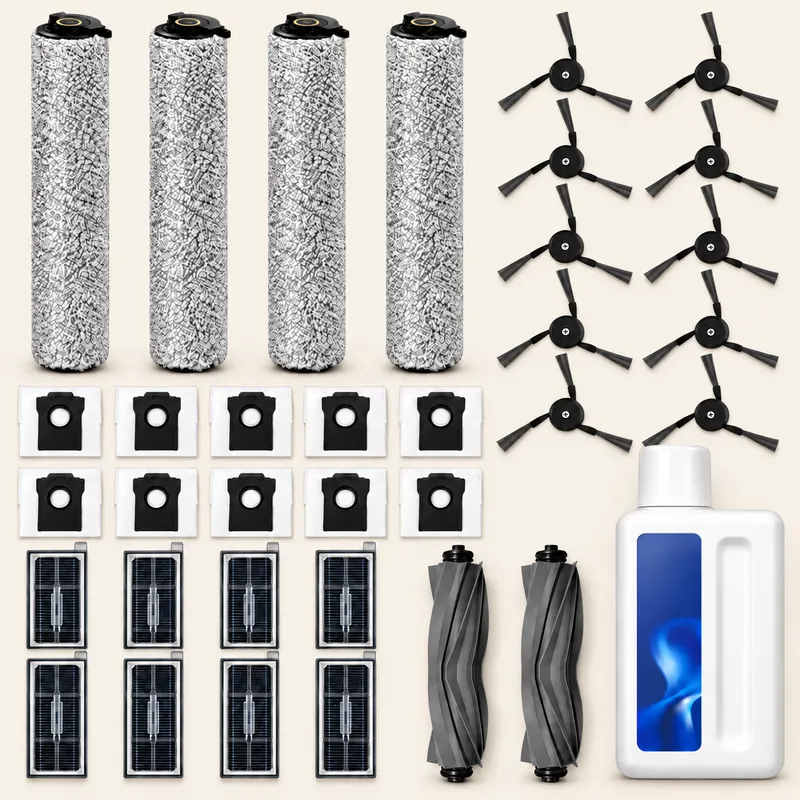

모바 (MOVA)
모바 S70 울트라 롤러 1년 세트 구성과 원통형 롤러 물걸레·브러시 관리법
글·구성: 제이상점 · 기종별 소모품 규격 요약본 (상세 사진과 관리 전문은 아래 네이버 블로그 모바일 원문에서 확인하실 수 있습니다.)

핵심 관리 · 선택 체크포인트
- 긴 원통형 롤러 물걸레로 바닥을 닦아내는 모바(MOVA) S70 울트라 롤러는 롤러 패드와 원추형 듀오브러시의 청결 상태가 청소 만족도를 좌우합니다.
- 원통형 롤러 물걸레와 원추형 듀오브러시 조합 점검하기: 모바 S70 울트라 롤러는 보송한 원통형 롤러 물걸레와 머리카락 엉킴을 줄여주는 원추형 듀오브러시 1쌍, 3발 사이드브러시를 사용합니다.
- 1년 패키지 구성품과 기종별 옵션 확인표: 상세페이지에서 세제 포함 세트와 세제 미포함 단품 옵션을 비교해 필요한 구성을 선택하실 수 있습니다.
- 건조 랙 통풍 관리와 수납 캐디 정돈으로 교체 시간 줄이기: 다용도실 건조 랙에서 롤러 물걸레와 필터를 말리는 동안 수납 캐디에 정리해 둔 새 롤러와 더스트백을 바로 꺼내 끼우면 주말 대청소 준비가 빠르게 끝납니다.
- 500ml 측면 손잡이 용기의 수량 옵션을 확인하는 법은 세제 500ml 옵션과 주문 수량 읽는 법에서, 개봉 일자를 기록해 관리하는 요령은 세제 500ml 개봉 뒤 보관 안내 기록법에서 살펴보실 수 있습니다.
부품 규격 · 점검 기준표
| 확인 항목 | 부품·옵션 특징 | 점검·선택 포인트 |
|---|---|---|
| 원통형 롤러 물걸레 | 장폭 원통형 극세사 롤러 패드 | 세척 후 통풍 건조 및 롤러 표면 이물질 제거 |
| 원추형 듀오브러시·사이드브러시 | 회색·주황 포인트 듀오브러시 쌍 + 3발 사이드브러시 | 양끝 회전축 먼지 정리 및 브러시 날개 마모 확인 |
| 필터·더스트백·전용 세척액 | 다크그레이 필터 + 슬라이딩 칼라 봉투 + 500ml 세척액 | 필터 24시간 그늘 건조 및 도크 세제통 잔량 점검 |
자주 묻는 질문 (FAQ)
Q. 모바S70울트라롤러의 원통형 롤러 물걸레 규격과 관리 기준은 무엇인가요?
A. 장폭 원통형 극세사 롤러 패드 규격을 사용하며, 세척 후 통풍 건조 및 롤러 표면 이물질 제거 기준으로 점검·교체하면 청소 효율을 안정적으로 유지할 수 있습니다.
Q. 모바S70울트라롤러의 원추형 듀오브러시·사이드브러시 규격과 관리 기준은 무엇인가요?
A. 회색·주황 포인트 듀오브러시 쌍 + 3발 사이드브러시 규격을 사용하며, 양끝 회전축 먼지 정리 및 브러시 날개 마모 확인 기준으로 점검·교체하면 청소 효율을 안정적으로 유지할 수 있습니다.
Q. 모바S70울트라롤러의 필터·더스트백·전용 세척액 규격과 관리 기준은 무엇인가요?
A. 다크그레이 필터 + 슬라이딩 칼라 봉투 + 500ml 세척액 규격을 사용하며, 필터 24시간 그늘 건조 및 도크 세제통 잔량 점검 기준으로 점검·교체하면 청소 효율을 안정적으로 유지할 수 있습니다.